Overview
In Japan it is common for companies to invoice customers and handle incoming payments through shimeseikyu, a billing practice unique to the country. A Japan invoice summary is the document that practice produces: a consolidated bill grouping multiple transactions — invoices, sales orders, credit memos — for a single customer over one billing cycle, typically a month. NetSuite’s Japan Invoice Summary was an essential but legacy workflow: a long process, with real uncertainty about how to review, consolidate and verify the result.
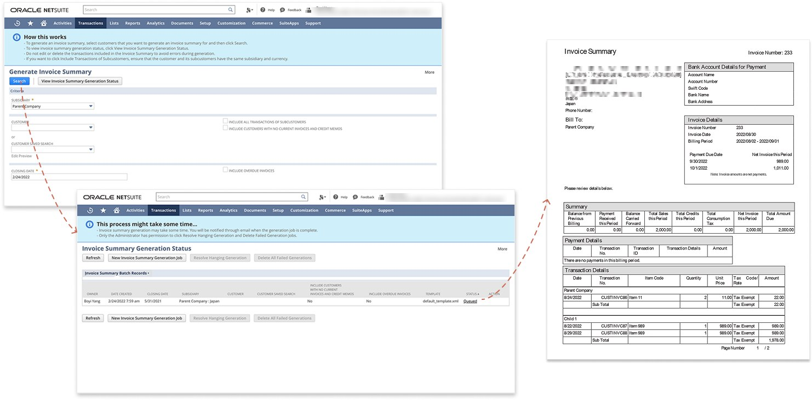
Set the criteria, wait for the batch job, and the result is one consolidated PDF per customer — every transaction for the period on a single document.
What “slow” actually meant
The top issue was the wait, and customers had been reporting it for years. The product’s answer was a banner: the process may take some time, and you will be notified by email once generation is complete.
The delay came from building the links between an invoice summary and its transactions. The system also enforces an exclusive rule — a transaction can belong to only one invoice summary, which is what prevents duplicate invoicing. The side effect was punishing: any change after generation meant deleting the summary and sitting through the entire wait again.
So we measured it. Generating five invoice summaries, one per customer across 300 transactions, took 74 minutes.
And that was five customers. We could not imagine what month-end looked like for a business with hundreds of them.
A different question
Generation was slow because the system updated every individual transaction to create the linkage between it and its summary. To engineering this was a performance problem: months of work to make the linking faster.
I asked something else, framed as a testable hypothesis: do users actually need a link between an invoice summary and its individual transactions? And if the link turned out to matter for reconciliation, a second hypothesis followed: the linkage serves reconciliation, not preview — nobody inspects the links themselves. If that held, the linking did not have to be built while someone sat watching a progress bar.
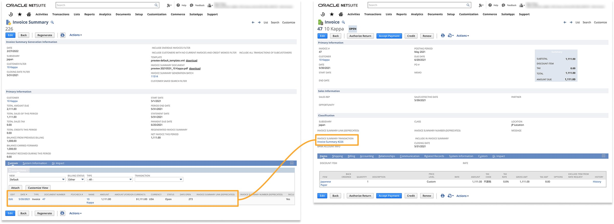
A link is created between the invoice summary and each of the invoices inside it.
Research: understand the workflow before changing it
To learn how Japanese customers actually manage invoice summaries — and to assess the impact of the tax rule arriving in October 2023 — I ran four online interviews, two in English and two in Japanese, each with one Japan customer or partner. Four insights came out of them:
- Customization. Customers need flexible invoice summary templates, because formats and required fields vary by industry and by company.
- Review and adjustment. They need to preview, review and adjust a summary before finalising it — including sharing drafts with their own customers for verification.
- Consolidation. Consolidated summaries are valuable for companies with multiple subsidiaries, but limited grouping flexibility and low awareness hold adoption back.
- Workarounds. Customers and partners run saved searches to generate or cross-check summaries, purely to avoid having to amend one after a long wait.
I then led a hypothesis-led journey-map workshop with Japan Professional Services partners. It showed that creating and managing invoice summaries was a fragmented, highly manual experience. Users moved across configuring invoice preferences, generating summaries, validating information, sending documents, archiving records and reconciling payments — relying on manual checks and workarounds throughout. The hardest parts were understanding how configuration settings affected the final invoice, making sure every relevant transaction was included, recovering from errors, and tracing a consolidated summary back to its individual invoices.
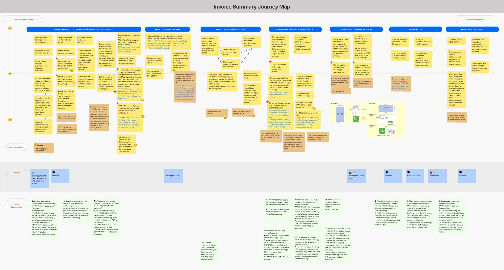
The journey map, built with the Japan Professional Services team.
The interviews that changed the answer
The workshop was followed by finance-expert interviews, and they challenged my first assumption directly. Finance users told us they do review individual transactions — to reconcile totals, confirm dates, identify omissions, and catch changes made after generation. They confirmed the value of the rule that a transaction belongs to exactly one invoice summary.
That reframed the problem. The link was not disposable. It needed a more efficient workflow.
From insight to design direction
1. Redesign the flow
The goal was never to hide the processing time. It was to remove an unnecessary dependency from the user’s path. Verification moves to the front, where it can prevent a wasted run; linking moves to the back, where nobody is waiting on it.
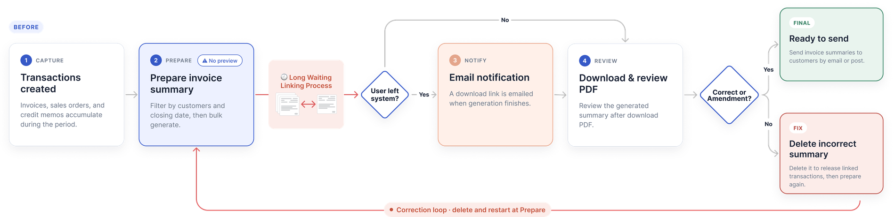
Before — review was only possible after generating and downloading.
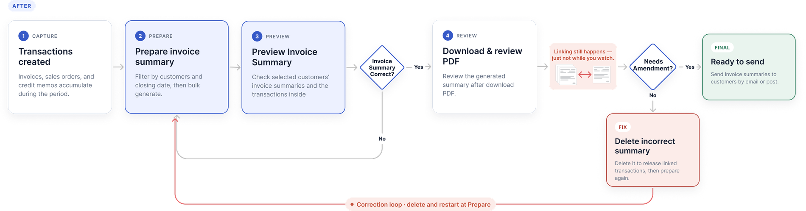
After — preview and verification come first, before anything is committed.
Rather than removing traceability, the solution introduced a lightweight link between invoice summaries and transactions, based on the finding that users do not inspect the link on the transaction itself. That avoided costly per-transaction updates and the user-event processing they triggered, while preserving the information users need for review.
2. Lifting the rest of the experience
The same release carried the work the journey map and the interviews had surfaced:
- Clearer standard versus consolidated generation paths — a new feature, and an answer to the terminology confusion the research found.
- Setup and generation choices that matched how users actually work.
- Improved invoice and PDF templates, including revealing the address through the window of the envelope.
- Recovery and regeneration scenarios, so a wrong summary no longer meant starting over.
Step 1 — setting up the generation
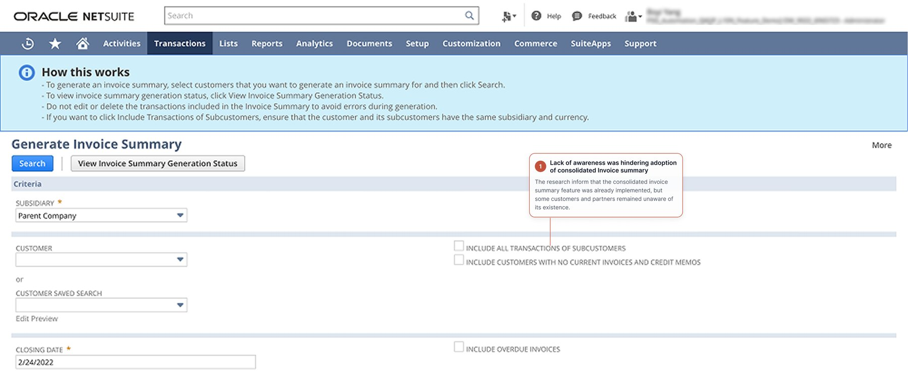
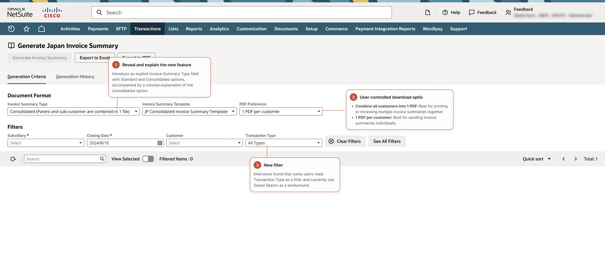
Step 2 — reviewing before committing
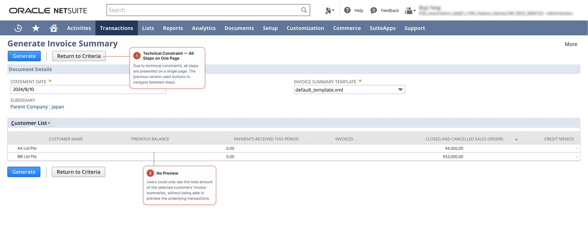
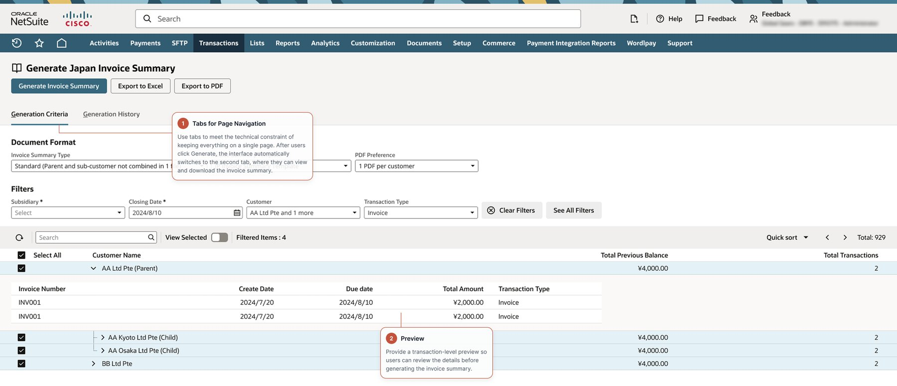
Step 3 — generating and getting the file
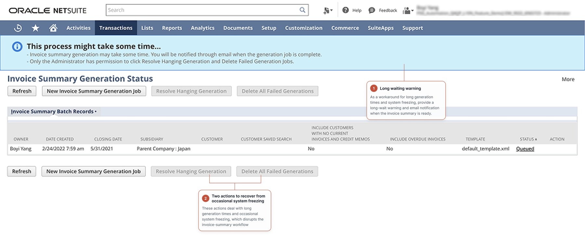
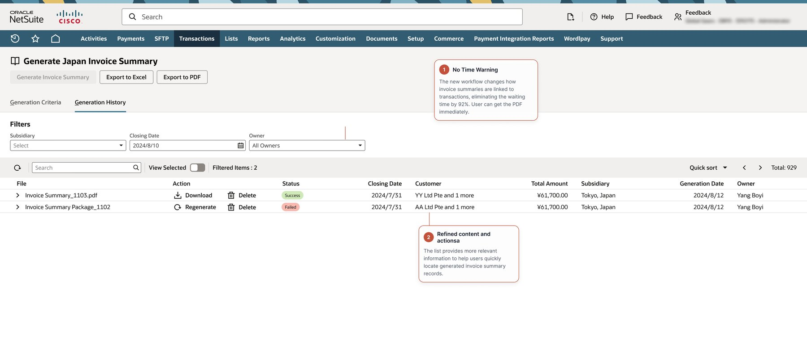
Step 4 — the template that gets posted
After — the invoice and PDF templates were improved too. The name block is positioned so that, folded and inserted, it lands exactly in the envelope window: no address labels, no re-printing. No requirements document asked for this one.
Screens shown with demo data; details abstracted to respect confidentiality. The regulatory context is public.
Verification after the redesign
We ran five moderated prototype sessions in August 2024 using dscout and Zoom. Participants completed realistic standard and consolidated tasks: select a subsidiary, closing date and customers; review the pre-generation table; generate and review the resulting documents; and explain what they expected to receive after download.
Both tasks reached a 100% success rate across five participants, and every ease rating landed at the easy end of the scale (5–7). Of the five, four rated themselves very confident with NetSuite beforehand and one somewhat confident.
Alongside the scores, the sessions surfaced four actionable improvements:
- Make parent–child relationships explicit. Participants were confused when child-company data appeared unexpectedly. The table needed to explain why related companies were included.
- Preserve a path back to the original invoice. Users wanted to inspect the underlying invoice details before deciding whether to generate a summary.
- Clarify destructive-action labels. “Delete Transaction” could be read as deleting a single line item rather than the whole invoice summary — unnecessary risk.
- Improve pre-generation decision support. Showing the number of transactions per customer would help users understand the scope of what they were about to generate.
The sessions confirmed the redesigned flow was understandable enough to complete the core tasks, and identified exactly which content and labelling changes were needed before wider rollout.
What I learned
For localization work, usability is inseparable from operational and regulatory context. A technically elegant solution can still fail if it removes the evidence users need to perform financial checks — which is exactly what my first hypothesis would have done, had the interviews not corrected it.
Three principles I carry into complex enterprise work:
- Validate workflow assumptions with the people closest to the domain.
- Treat speed as a user-experience outcome, not only an engineering metric.
- Preserve user trust by making system relationships, consequences and exceptions visible.